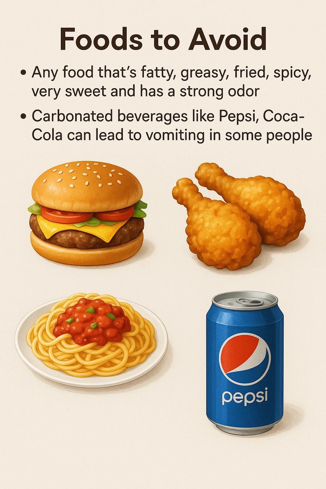

Nausea Management
⚠️ Seek Immediate Medical Help for Nausea If:
- Nausea lasts more than 24–48 hours despite medication
- Repeated vomiting or inability to keep fluids down
- Signs of dehydration: dry mouth, dark urine, dizziness
- Vomiting blood or material that looks like coffee grounds
- Severe abdominal pain or bloating
- High fever along with nausea (possible infection)
- Confusion, drowsiness, or extreme weakness
Follow Dietary Strategies:
- Snacking on dry crackers before rising
- Eating small, light, frequent meals to aid digestion
Behavior and Lifestyle Adjustments:
- Sitting upright after eating
- Avoid combining hot and cold foods
- Identify and avoid known nausea triggers
- Wear loose clothing
-
Practice deep breathing exercises
Video

Foods to Avoid:
- Fatty, greasy, fried, spicy, very sweet foods
- Strong-smelling foods
- Carbonated beverages like Pepsi or Coca-Cola

If the nausea is severe, seek immediate medical attention.